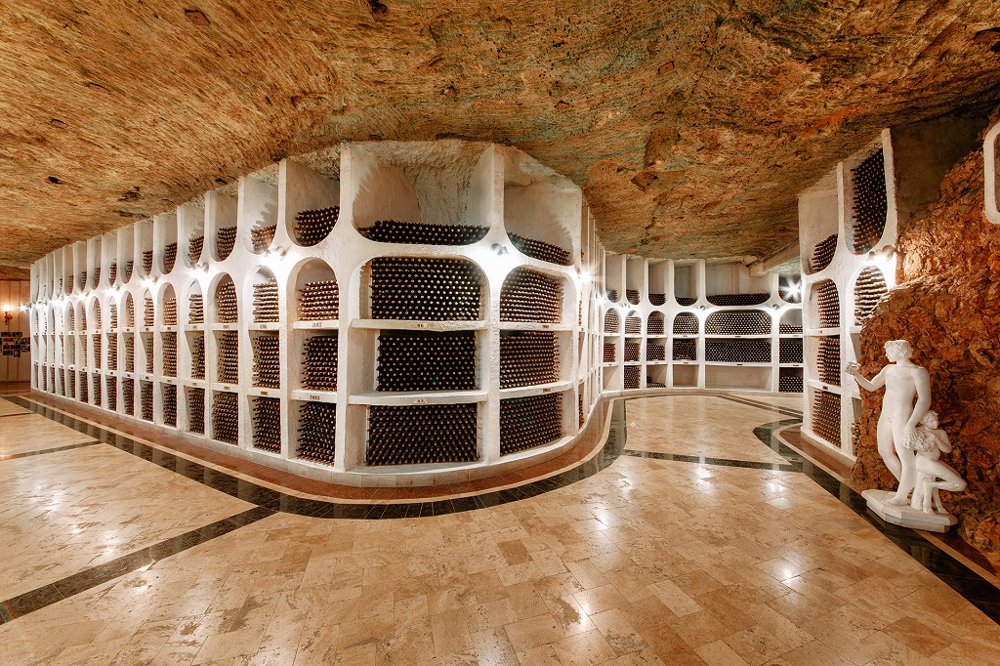

Explore the Underground Worlds of Moldovan Wine
Hidden Wines of Moldova – Experience the real Moldova, one of the best kept secrets in Europe. Take a tour to discover the real Moldova, through its vine-covered hills, centuries-old cellars and award-winning wineries. From the underground cities of Cricova and Milestii Mici to small boutique cellars in quaint Moldovan villages, we will organize customized tours to experience Moldova's winemaking traditions, stunning scenery, and generous hospitality.

Our Moldovan wine tours are about more than wine tastings — they’re about sharing Moldova's traditions, local cuisine, and folklore. From wine aficionados to adventurers, we design tours that bring you face-to-face with the people and stories that make each wine unique. Book a tour with Hidden Wines of Moldova, where every trip is more than a journey — it's a celebration of history, taste, and discovery.
About Our Company
At Hidden Wines of Moldova, we are passionate about showcasing the beauty, history, and taste of Moldova’s winemaking heritage. Our mission is to create authentic and memorable experiences for travelers from all around the world.
Wine Tours
Guided visits to Moldova’s most famous wineries – from underground cities to boutique family estates.
Private Tastings
Exclusive wine tastings paired with traditional cuisine, hosted by expert sommeliers.
Comfortable Transport
We provide modern, reliable transport so you can relax and enjoy every moment of your journey.
Corporate & Group Events
Special packages for companies, team-building trips, and group celebrations.
Why Choose Us
We love discovering Moldova’s secrets and bringing people along for the journey! We're experts with a personal touch, who design each tour to suit your interests and exceed your expectations. You’ll enjoy organization, comfortable transport, and insider access to the best wineries — we take care of the details so you can focus on enjoying your trip. Trust us to guide you through the heart of Moldova’s wine country and create unforgettable memories.